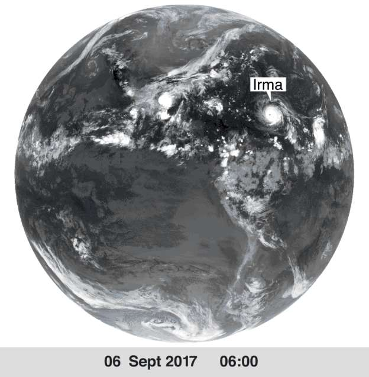

Click to Animate

This example uses an animated image with unlimited looping, but gives the user control to start and stop the animation via a click action.
This is some example text which is next to the image. Irma has been making headlines as the most powerful Atlantic storm in a decade with wind speeds of up to 295km/h (185mph). It hit the Caribbean on Wednesday as a category five hurricane, the highest possible level for such a storm, but was downgraded on Friday to a category four. As the storm hit Cuba, the large landmass slowed the storm to 215km/h (130mph) - but forecasters predict it will strengthen once again.